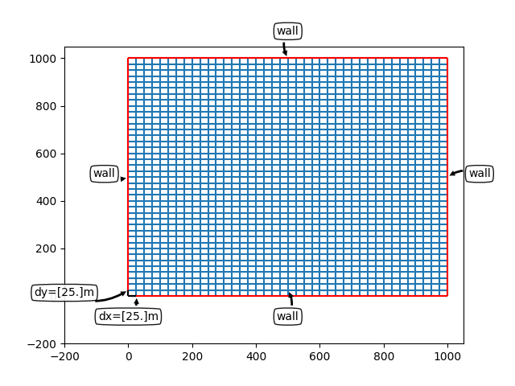
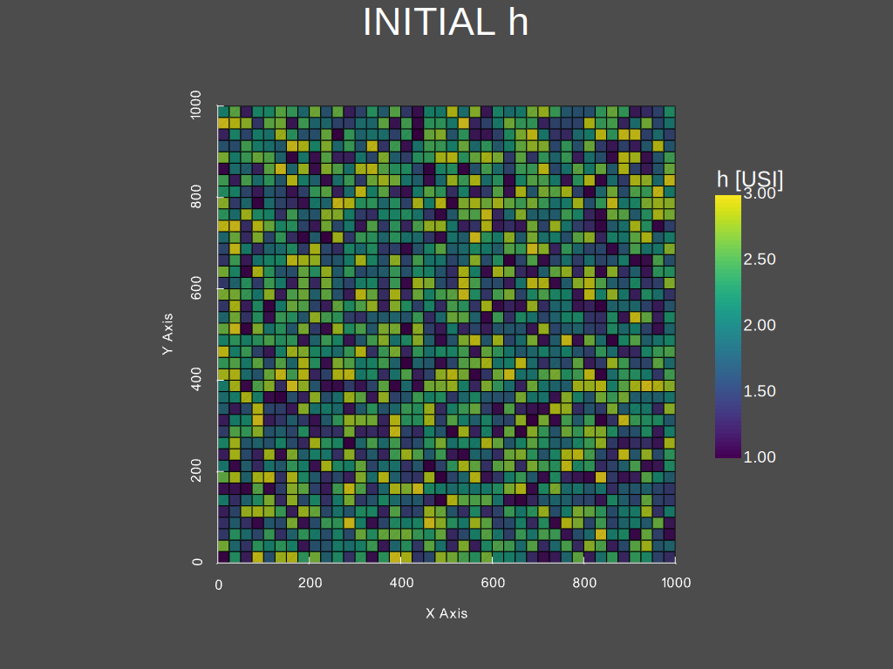
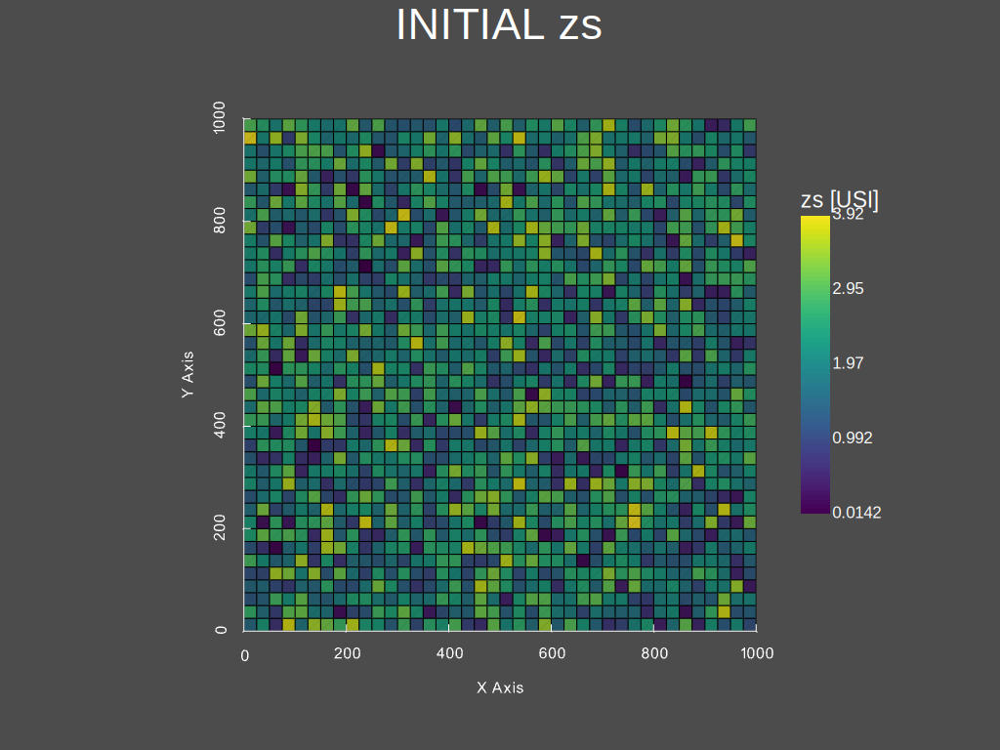
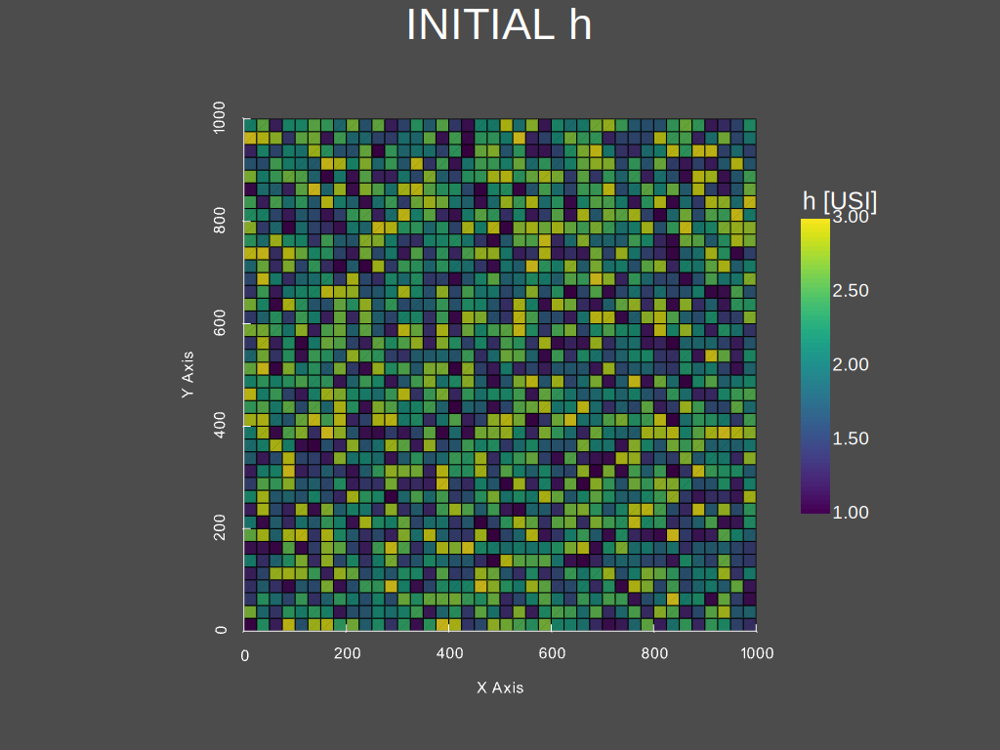
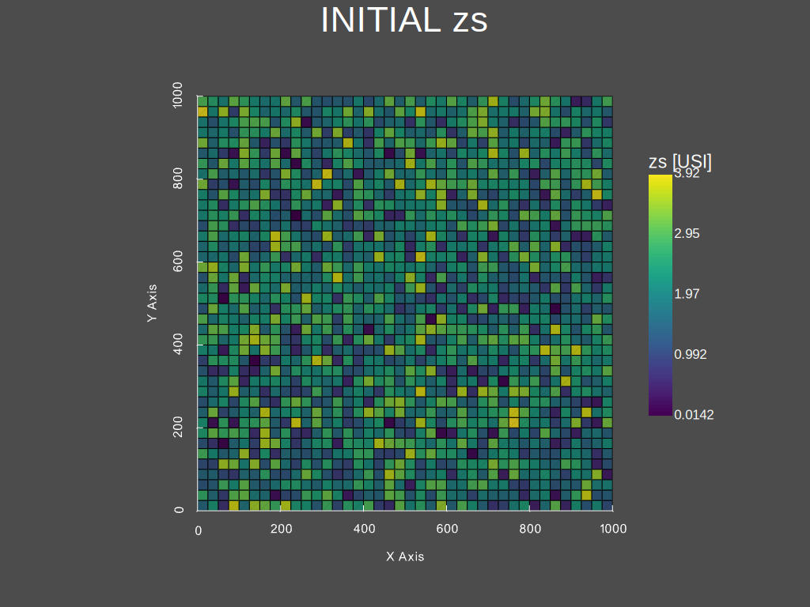
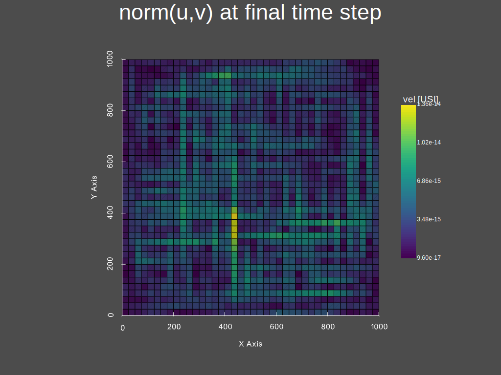
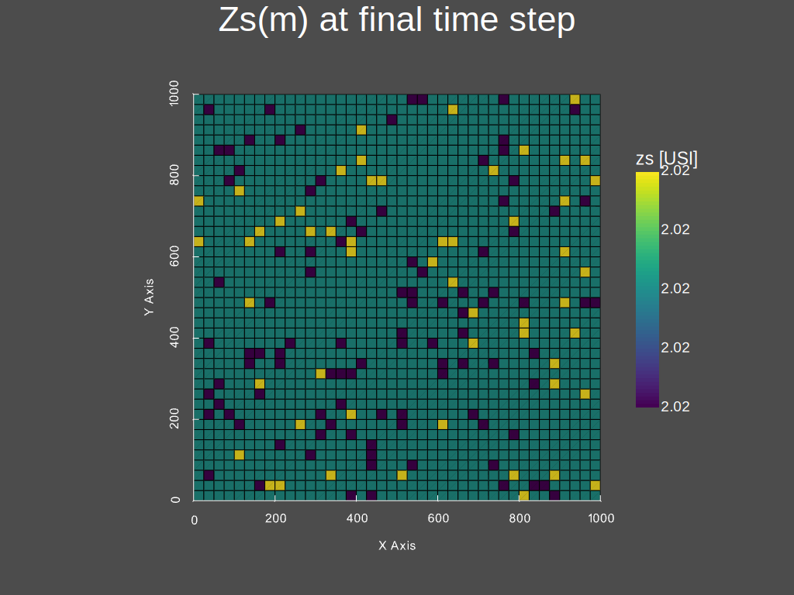

Forward/Direct run#
This tutorial details how to perform a direct/forward run with dassflow2d. The 2D SW equations are here solved on an academic case consisting in a lake at rest. **TO_DO ref to eqs & solver used **
The goal of this case is to check whether the equilibrium state is preserved, that is preserving initial states. More precisely the “Lake at rest” is performed to validate the well-balanced property of the numerical schemes used in DassFlow. The equilibrium challenged here is the equilibrium between fluxes and gravity source term \(S_g (U)\) for a perturbed topography.
The perturbed topography looks like:

Runnig “lake at rest” with command lines#
Set up your environment#
Prepare the simulation files corresponding to “lake at rest” case with:
Hint
File copy and compilation has just been performed in Getting started introduction, during Installation process. Thus, you don’t need to compile the code again.
Open a terminal in (/dassflow2d-wrap/code) and run the following commands:
# delete all files in your simulation directory before starting
rm -r ./bin_A/*
# Copy recursively the files provided in DassFlow case repository into your own simulation directory **code/bin_A/**.
cp -r ../cases/tuto_case/1_lake-at-rest/bin_A/* ./bin_A
Note that this test case “lake at rest” can be viewed as a stability test case where the well-balancedness of the numerical scheme (see. Math_num_doc) is tested in terms of equilibrium preservation. It is a simple test case for which, all the boundaries are set as walls and no inflow or outflow occurs.
Launch your first run using make#
Write the following command in your terminal:
make rundirect
This executes some commands coded in the Makefile and printed in the terminal at the beginning of the execution:

You should see in the terminal the successive temporal iterations of the numerical resolution of the 2D SW model.
Investigate results#
Have a look to directory ./dassflow2d-wrap/code/bin_A/res/ and investiguate the result files produced (result_initial.dat and result_final.dat). These dat files are in gnuplot format (cf. http://www.gnuplot.info/) ; another output format as well as plot tools are available in DassFlow and presented after.
Runnig “lake at rest” with Python#
In /dassflow2d-wrap/cases/tuto_cases/1_lake-at-rest/ open the script 1_main-tuto_forward_lake_at_rest.py.
##########################################################
##########################################################
# PERFORM A DIRECT SIMULATION WITH DASSFLOW2D
# LAKE AT REST
#
# Introduction to basic commands to run and visualise simulation reuslt
##########################################################
##########################################################
#=======================================================#
# Source librairies
#=======================================================#
import dassflow2d as df2d
import numpy as np
import os
import importlib
#=======================================================#
# copy case file
#=======================================================#
dassflow_dir = os.path.abspath("../../../")
# or absolute path : dassflow_dir =/home/pagarambois/Documents/Distant/dassflow2d-wrap/
print(f"Printing case files \n from {dassflow_dir}/cases/tuto_case/0_lake-at-rest/bin_A/* \n to {dassflow_dir}/code/bin_A ")
# delete all files in your simulation directory before starting
os.system(f"rm -r {dassflow_dir}/code/bin_A/*")
# Copy recursively the files provided in DassFlow case repository into your own simulation directory **code/bin_A/**.
os.system(f"cp -r {dassflow_dir}/cases/tuto_case/1_lake-at-rest/bin_A/* {dassflow_dir}/code/bin_A")
os.chdir( f"{dassflow_dir}/code/")
os.system("make cleanres cleanmin")
#=======================================================#
# initialise + run +save results
#=======================================================#
my_model = df2d.DassFlowModel(bin_dir = f"{dassflow_dir}/code/bin_A" , run_type = "direct") # initialise fortran/python instance
my_model.update_fortran() # allocate and initialise many fortran variables
my_model.run() # run model
my_model.save_res() # save simulation results in hdf5 files
my_model.build_grid() # build a pyvista.unstructuredgrid object, which is used for plots
#=======================================================#
# Post-processing
#=======================================================#
# for indication about plot_var method:
# help(my_model.plot_var)
print("Would you like to plot some model outputs")
args = input("Press Y or N to continue.") # ajouter exit si pas Y ou N
if args == "Y" or args == "y":
my_model.plot_var(what = "bathy", when = "initial", title_plot = "bahtymetry", save_plot=True, filename = "./res/bathy")
my_model.plot_var(what = "h", when = "initial", title_plot = "INITIAL h", save_plot=True, filename = "./res/h_0")
my_model.plot_var(what = "zs", when = "initial", title_plot = "INITIAL zs", save_plot=True, filename = "./res/zs_0")
my_model.plot_var(what = "u", when = "initial", title_plot = "INITIAL u", save_plot=True, filename = "./res/u_0")
my_model.plot_var(what = "v", when = "initial", title_plot = "INITIAL v", save_plot=True, filename = "./res/v_0")
# etc ...
my_model.plot_var(what = "h", when = 0, title_plot = "INITIAL h")
my_model.plot_var(what = "h", when = 1, title_plot = "h at second time step", save_plot=True,filename = "./res/h_fin")
# result at the end of the simulation:
my_model.plot_var(what = "vel", when = "final", title_plot = "norm(u,v) at final time step", save_plot=True,filename = "./res/velocity_fin")
my_model.plot_var(what = "zs", when = "final", title_plot = "Zs(m) at final time step", save_plot=True,filename = "./res/Zs_fin")
print("Would you like to plot temporal evolution of the free surface")
args = input("Press Y or N to continue.") # ajouter exit si pas Y ou N
if args == "Y" or args == "y":
for i in range(11):
my_model.plot_var(what = "zs", when = i, title_plot = f" h at wriite timestep= {i}") # water eight
print("Would you like to plot temporal evolution of the velocity")
args = input("Press Y or N to continue.") # ajouter exit si pas Y ou N
if args == "Y" or args == "y":
for i in range(11):
my_model.plot_var(what = "vel", when = i, title_plot = f" norm(u,v) at at wriite timestep= {i}")
Warning
Note that the location of the dassflow directory has to be defined by setting appropriate value to dassflow_dir at line 13 of the python script: 1_main-tuto_forward_lake_at_rest.py. A relative path has been set here and enables to run the script locally ; an absolute path enables to run the script in terminal from other directories.
Finaly execute the script in a terminal :
python3 "path_to_your_script/name_script.py"
Running “lake at rest” with Python explained step by step#
First, source necessary librairies and define necessary inputs:
#=======================================================#
# Source librairies
#=======================================================#
import dassflow2d as df2d
import numpy as np
import os
import importlib
#=======================================================#
# copy case file
#=======================================================#
dassflow_dir = os.path.abspath("../../../")
# or absolute path : dassflow_dir = "/home/pagarambois/Documents/Distant/dassflow2d-wrap/"
print(f"Printing case files \n from {dassflow_dir}/cases/tuto_case/0_lake-at-rest/bin_A/* \n to {dassflow_dir}/code/bin_A ")
# delete all files in your simulation directory before starting
os.system(f"rm -r {dassflow_dir}/code/bin_A/*")
# Copy recursively the files provided in DassFlow case repository into your own simulation directory **code/bin_A/**.
os.system(f"cp -r {dassflow_dir}/cases/tuto_case/0_lake-at-rest/bin_A/* {dassflow_dir}/code/bin_A")
os.chdir( f"{dassflow_dir}/code/")
os.system("make cleanres cleanmin")
First initialize the Fortran kernel:
# initialise fortran instance, and python corrponding data
my_model = df2d.DassFlowModel(bin_dir = f"{dassflow_dir}/code/bin_A" , arg = "direct")
You sould observe a corresponding console output :

Then you can run the model :
my_model.update_fortran() # allocate and initialise many fortran variables
my_model.run() # run model
The results are calculated at each calculating time steps (depending on clf condition) and are written at each writting timestep (dtw parameter):
Initial messages from console

Final messages from console

Finally you can save the results and perform some plots by executing the last lines of the name_script:
# save simulation results in hdf5 files
my_model.save_res()
my_model.build_grid() # necessary for plots # builds callable objects
my_model.grid
#=======================================================#
# Post-processing
#=======================================================#
print("Would you like to plot model outputs")
args = input("Press Y or N to continue.") # ajouter exit si pas Y ou N
if args == "Y" or args == "y":
my_model.plot_var(what = "bathy", when = "initial", title_plot = "bahtymetry")
my_model.plot_var(what = "h", when = "initial", title_plot = "INITIAL h")
my_model.plot_var(what = "zs", when = "initial", title_plot = "INITIAL zs")
my_model.plot_var(what = "u", when = "initial", title_plot = "INITIAL u", save_plot=True, filename = "./res/u_0")
my_model.plot_var(what = "v", when = "initial", title_plot = "INITIAL v", save_plot=True, filename = "./res/v_0")
# etc ...
my_model.plot_var(what = "h", when = 1, title_plot = "h at second time step")
# result at the end of the simulation:
my_model.plot_var(what = "vel", when = "final", title_plot = "norm(u,v) at final time step")
my_model.plot_var(what = "zs", when = "final", title_plot = "Zs(m) at final time step", save_plot=True,filename = "./res/Zs_fin")
First, you can have a look at the bathymetry and initial conditions (of water heigth and free surface height).
One can note that the initial conditions does not correspond to a state at rest and some time will be necessary before attaining the stationary “at rest” situation
 





You can see at second timestep the evolution of water heigths.

You can also see at the end of the simulation, that the velocities are almost null and the lake remains at rest:
 By running the last lines of the script, plotting temporal evolution of free surface height and velocity, you can also check that we atteined the stationnary state:
print("Would you like to plot temporal evolution of the free surface")
args = input("Press Y or N to continue.") # ajouter exit si pas Y ou N
if args == "Y" or args == "y":
for i in range(11):
my_model.plot_var(what = "zs", when = i, title_plot = f" h at wriite timestep= {i}")
print("Would you like to plot temporal evolution of the velocity")
args = input("Press Y or N to continue.") # ajouter exit si pas Y ou N
if args == "Y" or args == "y":
for i in range(11):
my_model.plot_var(what = "vel", when = i, title_plot = f" norm(u,v) at at wriite timestep= {i}")
Use this script for any direct run#
Using this script one can run any other case by simply providing another case data directory with necessary inputs are provided to DassFlow.
You can change the name of the case data folder /cases/tuto_case/0_lake-at-rest by /cases/dev_case/1_qin into the python script
in the line os.system(f"cp -r {dassflow_dir}/cases/tuto_case/0_lake-at-rest/* {dassflow_dir}/code/bin_A"). Then direct runs can be performed with the other test case specified.
for each test case you run, you can check spatial variables values at any writting timestep using the method dassflow2d.DassFlowModel.plot_var (you can acess documentation of the method in API Reference section, in DassFLowModel/constructor/plot_var) .
Danger
The last loop on temporal evolution must also be adapted (to the number of writing time steps) or deleted.


{kind=link}
{kind=link}
{kind=link}
{kind=link}
{kind=link}
{kind=link}
{kind=link}
{kind=link}